扉页
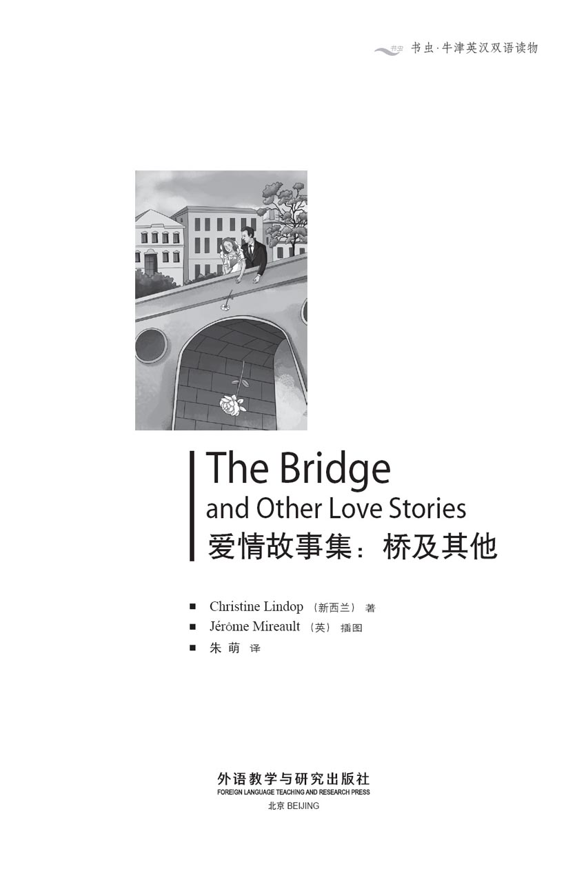
版权页
京权图字：01-2013-7811
Published by arrangement with Oxford University Press for sale in the People's Republic of China only and not for export therefrom. This edition is for sale in the mainland of China only, excluding Hong Kong SAR, Macao SAR and Taiwan.
© Oxford University Press 2011
Oxford is a registered trademark of Oxford University Press
图书在版编目（CIP）数据
爱情故事集：桥及其他：英汉对照／（新西兰）林多普（Lindop, C.）著；（英）米罗特绘；朱萌译．—北京：外语教学与研究出版社，2013.12
（书虫·牛津英汉双语读物）
书名原文：The bridge and other love stories
ISBN 978-7-5135-3924-1
Ⅰ．①爱… Ⅱ．①林… ②米… ③朱… Ⅲ．①英语－汉语－对照读物②故事－作品集－新西兰－现代 Ⅳ．①H319.4：I
中国版本图书馆CIP数据核字（2013）第309205号
出版人 蔡剑峰
责任编辑 谷 丰
封面设计 蔡 颖
出版发行 外语教学与研究出版社
社 址 北京市西三环北路19号（100089）
网 址 http://www.fltrp.com
书 号 ISBN 978-7-5135-3924-1
制售盗版必究 举报查实奖励
版权保护举报电话：（010）88817519
内容简介
内容简介
人们常说，有情人终成眷属。然而，通往爱的道路常常是艰难的。人们会说错话、做错事、措辞不当、犯错误、误解对方……
第一个故事中，卢克和杰玛在讨论一个爱的计划。然而，是谁在做计划？又是为了谁做的计划？这是一个怎样的计划？你能为假期、坐火车旅行或是一项工作做计划，但是你真的能为爱做计划吗？
第二个故事中，萨姆在向日葵咖啡店为女友露西筹备了一份大惊喜。萨姆做了美味的蛋糕，而且那份大惊喜的构思也很好。不过，露西是怎么想的？
最后一个故事中，阿尔玛回到自己阔别六年的家乡。她感到很难过，因为她无法忘掉尼娜和德拉甘的故事。尼娜是阿尔玛的妹妹，她曾和一位名叫德拉甘的年轻男子相爱……
THE BRIDGE and Other Love Stories
THE BRIDGE
and Other Love Stories
Love can always find a way, people say. But the road to love is often difficult. People say the wrong thing, do the wrong thing, can't find the right words, make mistakes, misunderstand each other...
In the first story Luke and Gemma talk about a plan for love. But who makes the plan? And who is the plan for? What kind of plan? You can make a plan for a holiday or a train journey or a piece of work, but can you really make a plan for love?
In the second story Sam plans a big surprise at the Sunflower Café for his girlfriend Lucy. Sam makes wonderful cakes, and the surprise is a nice idea. But what does Lucy think about it?
In the last story Alma returns to her home town after six years away. It is a sad time for her, because she cannot forget the story of Nina and Dragan. Nina was Alma's sister, and Nina was in love with a young man called Dragan...
目录
Plan for Love
Plan for Love
Gemma was hungry. Time for lunch, she thought. She went down to the hospital canteen, got some sandwiches and a cup of coffee, and looked for a table. But it was one o'clock and the canteen was very busy. There were no free tables. Then, at the long table by the window, she saw a tall man with fair hair. It was her friend Luke, and there was a seat next to him. She walked across to him.
'Hi Luke. Can I sit here?' said Gemma.
Luke did not look up, and did not speak. Perhaps he didn't hear her.
Gemma tried again. 'Luke? Er, can I sit here? Or are you waiting for someone?'
'Oh, hi Gemma. No, no, I'm not waiting for anyone. Come and sit down.'
Gemma put her sandwiches and coffee on the table, and sat down. She and Luke worked in the physiotherapy clinic in a hospital in Bristol. Usually, Luke was friendly, but not today.
'The canteen's very busy,' Gemma said. 'Where did all these people come from?'
Luke did not answer.
'Luke? Are you OK? Is something wrong?'
'I'm OK. I'm good,' said Luke. He moved his coffee cup around on the table, and did not look at Gemma. He drank some coffee. Gemma began to eat her sandwiches.
Then Luke put his cup down, and looked at Gemma. 'Gemma, we're good friends, aren't we? Can I talk to you?'
Gemma put her sandwich down. 'Yes, of course, Luke. What is it?'
Luke's face was red. 'It's stupid of me, I know that. But I... I mean... Look, do you see that girl over there? The girl with the long blonde hair?'
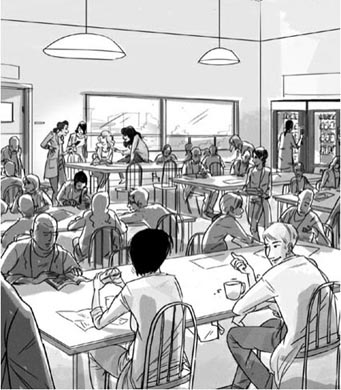
'Do you see that girl over there?' said Luke.
Gemma looked across the canteen. There was a beautiful girl with long blonde hair at a table near the door. Gemma's hair was short and black, and she wore glasses.
'You mean Charlotte? She works for Dr Howell, doesn't she?'
'That's right. Well, I really like her. She's... well, look at her, she's beautiful! I want to talk to her, I really do!'
'So talk to her!'
'But I can never find the right words. What can I say? I open my mouth – and nothing comes out! And she goes away, and I feel stupid.'
Gemma smiled at him.
'Poor Luke! But that's not like you. When you're with me, you talk about lots of things. Like this weekend – what did you do this weekend?'
'I went swimming with Paul on Saturday,' Luke said. 'We went in the sea. It was so cold – but it was great!'
They talked for a few minutes. Then Gemma said:
'Luke, you're on the social committee, aren't you?'
'Yes, that's right,' said Luke. 'Why?'
'Well, I've got a plan. We make you a list of questions – about music, and free time, nights out – things like that. Then you ask Charlotte these questions. You're asking them for the social committee, you see. And she answers – and you ask some more questions, and there you are... you're talking to Charlotte!'
'Hmm,' said Luke. 'Yes, I see – I think!'
'I know,' said Gemma, 'let's try the plan now. You're Charlotte, and I'm Luke. I do the questions, and you do the answers – OK?'
'Er, yes,' said Luke. 'You mean, I must ask you all these questions now?'
'Er, no,' said Gemma. 'It's like... well, we're playing... I'm playing Luke, and you're playing Charlotte. For now, you ARE Charlotte, OK?'
'Right. Got it,' said Luke. 'So you're me. You're Luke.'
Gemma smiled again. 'Good. OK, let's go.' She spoke in a different voice. 'Hi Charlotte. My name's Luke, and I'm on the social committee. We want to plan some days and nights out for people from the hospital. What do you like doing? Is it OK to ask you some questions?'
'Yes, of course,' said Luke.
'OK – first, what kind of music do you like?'
'That's easy. I like Black Phoenix, and the Tree Rats – do you know the Tree Rats? They're really good.'
'No, I don't,' said Gemma, 'but I saw Black Phoenix last month. They're great! OK – what do you like doing at the weekend?'
'I like running, and swimming,' said Luke. 'And I like going out on my bike...'
'You see?' said Gemma. 'It's easy really. You just need the questions.'
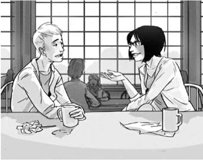
'You just need the questions,' said Gemma.
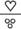
Later that afternoon, Luke stopped in the office. Gemma was at one of the computers.
'Hi, Luke,' said Gemma. 'Have you got a few minutes? I've got some questions here. Come and see.'
Luke read the list of questions on her computer.
'Oh, that's great, Gemma!' he said.
'Do you want to put any more questions on the list?' she asked. Luke thought for a minute.
'Do you like going to music festivals?' he said at last.
'Yes, that's good,' said Gemma. She put it on the list.
Soon Luke had the list in his hands.
'Wait for the right time,' said Gemma. 'And – good luck!'
Every day Luke looked for Charlotte in the canteen. On Tuesday she was with Molly, and on Wednesday he did not see her. But on Thursday...
'Hi Charlotte,' said Luke. 'My name's Luke. I'm on the social committee. We want to plan some days and nights out for people from the hospital. Can I ask you some questions?'
'OK,' said Charlotte, and she smiled at Luke.
They sat down near the window.
'Right,' said Luke. 'First, what kind of music do you like?'
'Well, I like the Good Girls, and Sadie Moonlight, and lots of girl singers, really. Oh, and Bobbie, of course.'
'Bobbie?' said Luke. 'Really?'
'He's wonderful. "Love me, love nobody but me,"' sang Charlotte happily.
'Do you like Black Phoenix?'
'Who?' said Charlotte.
'Um – it doesn't matter,' said Luke quickly. 'Let's see-do you like swimming?'
'Swimming?' laughed Charlotte. 'Just look at my hair. Me – swimming!'
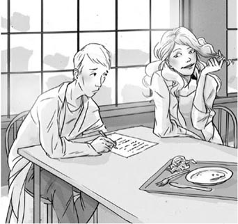
'Swimming?' laughed Charlotte. 'Just look at my hair.'
'Have you got a bike?'
'No – I rode a bike when I was little, but not now. Not in these shoes.' Luke looked at Charlotte's shoes. They had very high heels.
'Do you go to festivals?'
'Only in good weather, with no rain and no tents.'
'So – you never go to festivals,' Luke said.
'Never,' said Charlotte.
'What do you like doing in your free time then?'
'Facebook,' Charlotte said. 'I'm on Facebook every night. Are you on Facebook?'
'Er, no,' said Luke. 'I, er, use computers at work, but away from work I like to do other things. I go—'
But Charlotte was not interested in listening to Luke. 'But why not?' she said. 'Facebook is soooo cool! Do you know, I've got 778 Facebook friends, lots of them are in America, and I've got some in Japan, Australia – oh, everywhere! And photos – I've got thousands of photos on Facebook now.'
'You don't go out much, then?' Luke asked. 'You just go on Facebook?'
'Of course not!' said Charlotte. 'Don't be stupid. I hang out with my friends – Monica, Jess, Ellie, Alice... We go to clubs, and we go shopping. I love shopping. We're going to Eastwater next weekend, me and Jess and Alice. Do you know, there are more than 250 shops there. We're going into every one of them! I can't wait!' She saw Luke's face, and laughed. 'Oh, men are sooo boring about shopping!'
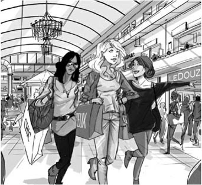
‘I love shopping. We're going to Eastwater next weekend...’
'Well, I, er...' Luke said. He began again, '250 shops – Wow! That's a lot of shopping. Well, have a great day with your friends, Charlotte. Thanks for your time. Nice talking to you.'
'That's OK, Luke,' said Charlotte. 'Bye.'
Gemma looked up. Luke was at the door, and in his hand was the list of questions.
'Hmm,' she said. 'That's not a happy face. Three out of ten? Two out of ten?'
'Zero out of ten, I think,' said Luke unhappily. 'She doesn't like swimming, bikes, or festivals, and she doesn't like Black Phoenix – she likes Bobbie!'
'Bobbie!' said Gemma. She laughed. 'Oh no!'
'Yes. And she likes the Good Girls. And she loves shopping, and can't wait to go to Eastwater.'
'Bad luck, Luke,' said Gemma. 'You got all the answers, but they're all the wrong answers. You and Charlotte are very different people.'
'Very different,' said Luke unhappily. 'You're right.'
He walked away, and Gemma watched him. 'Oh, Luke!' she thought.
On Sunday morning Luke went out on his bike. He rode along the streets of the city and thought about his week.
'I'm stupid,' he thought. 'Charlotte is the wrong girl for me. She's beautiful, but we like different things.'
Suddenly he saw a lot of people by the road. He stopped to look. 'What's going on?' he thought. 'Why are all those people clapping and shouting?' He began to cross the street, but a policeman came over to him.
'You can't go along there,' he said. 'The race is finishing there.'
'The race?' said Luke. 'What race is that?'
'It's the City Road Race,' said the policeman. 'Look – here come the runners now.'
The first man finished the race, and Luke clapped. A few minutes later, the women runners arrived. Luke clapped them too. Then he looked again. Was that Gemma? Yes it was – and she was third!
'Gemma,' Luke called. 'Well done, Gemma!' He put his bike against a tree and ran across to Gemma.
'Hello, Luke,' said Gemma. She was in her running clothes, black and green, and she looked good.
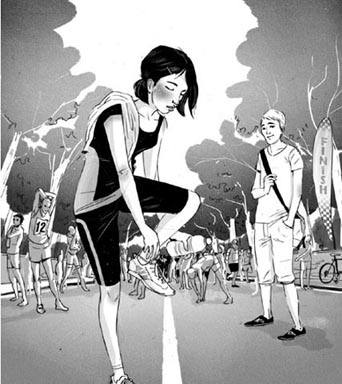
Gemma was in her running clothes, and she looked good.
'Wow,' Luke said. 'You look great in those colours. I only ever see you in hospital clothes usually. And you came third too. That's wonderful!'
Gemma was busy with her towel. 'Thanks, Luke,' she said.
Luke could not take his eyes away from Gemma. 'You're a runner,' he said. 'I never knew that.'
'You never asked me,' said Gemma. She smiled at Luke, a long slow warm smile.
Luke looked down into her blue eyes. He looked for a long time. A new and wonderful idea came into his head. 'Wow,' he said again. 'I never saw your eyes before – they're... beautiful.'
Gemma laughed. 'I wear glasses at work,' she said. 'That's why.'
Luke Suddenly remembered. 'Hey, you're tired, you just ran a race. Let's sit down.'
They sat down on a low wall together. Around them, other people talked about the race, but Luke and Gemma did not hear them or see them. They sat quietly and Gemma drank some water. Luke wanted to say a lot of things, but he could not find the right words. Then he opened his mouth – and all the right words came out.
'Gemma, have you got a bike?' he asked.
'Yes,' she said. 'Last year I went to Utrecht for a week in the summer, and I went everywhere by bike.'
'Do you like swimming?'
'Yes, and I love swimming in the sea – it's the best.'
'And you like Black Phoenix, and the Tree Rats.'
'And Darkwater,' said Gemma. 'They're like the Tree Rats, but better.'
'Darkwater?' said Luke. 'I like them, they're really great. Hey, they're at the Mountain Club tonight. Would you like to... I mean... Do you... You don't want to come with me, perhaps?'
Gemma laughed, a long happy laugh. 'Of course, I want to!' she said. 'What time shall we go?'
Two things, Luke thought. You only need two things. The right questions – and the right answers. Then it's easy.
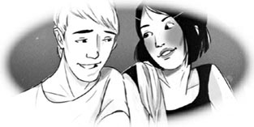
plan n. a set of actions for achieving something in the future, especially a set of actions that has been considered carefully and in detail 计划
canteen n. a place at school or work where people can buy meals （工厂、学校等的）食堂
fair adj. someone who is fair, or who has fair hair or skin, has hair or skin that is very light in colour 浅色的；金发的
physiotherapy n. the use of exercises to help muscles and joints 物理疗法，理疗
clinic n. a place, often in a hospital, where medical treatment is given to people who do not need to stay in the hospital 诊室，诊所
stupid adj. showing a lack of good sense or good judgment 愚蠢的
blonde adj. a very light yellow colour 浅色的，金色的
social committee a group of people who plan fun things for other people to do together 社交委员会
list n. a set of things, names, numbers etc usually written one below the other, for example so that you can remember or check them 清单，一览表
festival n. an occasion when there are performances of many films, plays, pieces of music etc, usually happening in the same place every year （常指每年在同一地点举行的电影、音乐、戏剧等）活动，节庆
heel n. the raised part on the bottom of a shoe that makes the shoe higher at the back （鞋）后跟
tent n. a kind of small house made of cloth 帐篷
Facebook n. a social networking website where people can send messages, photos etc to their friends “脸谱”社交网站
Cool! very good, great, interesting, wonderful 太酷了！太棒了！
hang out with to spend time with 和（朋友等）在一起
club n. a place where people go to dance, listen to music, and meet socially 俱乐部
suddenly adv. quickly and unexpectedly 突然
clap v. to hit your hands together to show that you like something 鼓掌
shout v. to say something very loudly 呼喊，喊叫
race n. a competition to see who can run, drive etc the fastest 竞速比赛，赛跑
towel n. a piece of cloth that you use for drying your skin or for drying things such as dishes 毛巾
爱的计划
爱的计划
杰玛饿了。该吃午饭了，她想。她下楼来到医院的食堂，买了些三明治和一杯咖啡，想找个位子坐下。可现在是一点钟，食堂里人很多，没有空位子。这时候，在靠窗的长桌旁边，她看到一位金发的高个男子。那是她的朋友卢克，他旁边有个空位子。她向他走了过去。
“嗨，卢克。我能坐这儿吗？”杰玛问。
卢克没有抬头，也没有说话。也许他没有听见杰玛的话。
杰玛又说了一遍。“卢克？呃，我能坐在这儿吗？你又或是在等什么人？”
“啊，你好，杰玛。没，没有，我没在等什么人。来坐吧。”
杰玛把三明治和咖啡放在桌上，坐了下来。她和卢克都在布里斯托尔一家医院的理疗诊室工作。平日，卢克待人友好，但今天却是个例外。
“食堂里人真多。”杰玛说，“这些人都是从哪儿来的？”
卢克没有作答。
“卢克？你还好吧？是不是发生什么事了？”
“我没事，挺好的。”卢克说。他拿着咖啡杯在桌上打转，也不看杰玛一眼。他喝了些咖啡。杰玛开始吃她的三明治。
随后卢克把杯子放了下来，看着杰玛。“杰玛，我们是好朋友，对不对？我能和你说点儿事吗？”
杰玛把三明治放下。“对啊，当然可以了，卢克。什么事？”
卢克的脸红了。“我知道我很傻。不过我……我的意思是……看，你看到那边的那个女孩了吗？那个金色长发的女孩？”
杰玛往食堂的另一边望去。在门附近的桌子旁坐着一个金色长发的漂亮女孩。杰玛留着黑色的短发，还戴着眼镜。
“你是说夏洛特？她在豪厄尔医生手下工作，对吧？”
“没错。呃，我真的很喜欢她。她……呃，你看她，她真漂亮！我想和她说话，我真的想啊！”
“那就和她说啊！”
“可我从来没找到过合适的词。我能说什么呢？我张开嘴——什么也说不出来！然后她就走了。我觉得自己是个傻瓜。”
杰玛向他笑了笑。
“可怜的卢克！但那样可不像你啊。你和我在一起的时候，你总有很多话说。就说上个周末吧——你上个周末做什么了？”
“我上周六和保罗去游泳。”卢克说，“我们到海里游泳。水很冷——不过玩得很痛快！”
他们聊了几分钟，然后杰玛说：
“卢克，你是社交委员会的成员，对吧？”
“是啊，没错。”卢克说，“为什么要问这个？”
“嗯，我想到一个计划。我们一起列出一些问题——有关音乐啊，业余时间啊，夜生活啊，等等。然后你去问夏洛特这些问题。要知道，你是代表社交委员会去问的。她回答你——然后你再问更多的问题，然后你不就……你不就和夏洛特说上话了！”
“嗯。”卢克说，“是啊，我懂了——我觉得我懂了！”
“我有个主意。”杰玛说，“我们现在就来试试这个计划。你是夏洛特，我是卢克。我来问问题，你来回答——好吗？”
“呃，好啊。”卢克说，“你的意思是，我现在就要向你问所有的问题吗？”
“呃，不是的。”杰玛说，“这就好像……嗯，好像我们在扮演角色……我扮演卢克，你扮演夏洛特。从现在开始，你就是夏洛特，明白吗？”
“好的，我明白了。”卢克说，“也就是说你是我。你是卢克。”
杰玛又笑了。“很好。好啦，我们开始吧。”她换了个嗓音。“嗨，夏洛特。我叫卢克，我是社交委员会的委员。我们打算为医院里的人安排一些白天和晚上的社交活动。你喜欢做什么？我可以问你几个问题吗？”
“当然可以。”卢克说。
“好——首先，你喜欢什么音乐？”
“这简单。我喜欢黑凤凰乐队和棘鼠乐队——你知道棘鼠乐队吗？他们真的很棒。”
“不，我不知道。”杰玛说，“不过我上个月看了黑凤凰的演出。他们很棒！好——你周末喜欢做什么？”
“我喜欢跑步，还有游泳。”卢克说，“我还喜欢骑自行车出门……”
“明白了吗？”杰玛说，“真的很简单。你只要准备好问题就行了。”
那天下午晚些时候，卢克留在办公室里。杰玛坐在其中一台电脑前。
“嗨，卢克。”杰玛说，“你现在有空吗？我列出了一些问题。过来看看吧。”
卢克看了她在电脑上列出的问题。
“啊，真是太棒了，杰玛！”他说。
“你想在单子上再加些问题吗？”她问。卢克想了片刻。
“你喜欢去音乐节吗？”他最终说。
“对，这很好。”杰玛说。她把这个问题加上了。
没过多久，卢克就把单子拿到手了。
“等待合适的时机。”杰玛说，“还有——祝你好运！”
卢克每天都在食堂里寻找夏洛特。星期二，她和莫莉在一起；星期三，他没有看到她。但是，星期四……
“嗨，夏洛特。”卢克说，“我叫卢克。我是社交委员会的。我们打算为医院里的人安排一些白天和晚上的社交活动。我可以问你几个问题吗？”
“好啊。”夏洛特说，她朝卢克笑了笑。
他们在窗户边坐下。
“好。”卢克说，“首先，你喜欢什么音乐？”
“嗯，我喜欢好女孩乐队和萨迪月光乐队，还有很多女歌手，真的很喜欢。哦，当然还有鲍比。”
“鲍比？”卢克说，“真的吗？”
“他真是棒极了！‘爱我，只爱我。’”夏洛特开心地唱了起来。
“你喜欢黑凤凰乐队吗？”
“谁？”夏洛特问。
“呃——没关系。”卢克马上说。“看看下一个问题——你喜欢游泳吗？”
“游泳？”夏洛特笑了起来，“看我的头发就知道了。我——游泳！”
“你有自行车吗？”
“没有——我很小的时候骑过，不过现在不骑了。穿这鞋没法骑车。”卢克看了看夏洛特的鞋。这双鞋的鞋跟非常高。
“你去音乐节吗？”
“如果天气好，不下雨，又不支帐篷的话就去。”
“也就是说——你从来不去音乐节。”卢克说。
“从来不去。”夏洛特说。
“那你休息的时候，会喜欢做什么？”
“‘脸谱’。”夏洛特说，“我每天晚上都上‘脸谱’。你上‘脸谱’吗？”
“呃，没有。”卢克说，“我，呃，工作的时候用电脑，但是下班后我喜欢做点别的事情。我去——”
然而夏洛特对卢克的话不感兴趣。“但是为什么没有呢？”她说，“‘脸谱’简直太酷了！你知道吗，我有778个‘脸谱’好友，很多都在美国，还有的在日本、澳大利亚——啊，在世界各地！还有照片——现在我的‘脸谱’上有几千张照片了。”
“那就是说你不怎么出门了？”卢克问。“你只上‘脸谱’？”
“当然不是了！”夏洛特说，“别犯傻了。我经常和朋友们在一起——莫妮卡、杰丝、埃莉、艾丽斯……我们去俱乐部、逛商场。我爱购物。我们下周末要去东水购物中心，我、杰丝和艾丽斯。你知道吗，那里有二百五十多家店铺。我们每家都要进去逛！我都等不及了！”她看着卢克的脸，笑了。“啊，谈到购物时，男人真令人扫兴！”
“嗯，我，呃……”卢克说。他停顿了一下又说，“二百五十家店铺——哇！真有的可逛。好吧，祝你和朋友们玩得开心，夏洛特。谢谢你抽出时间回答问题。很高兴和你聊。”
“没什么，卢克。”夏洛特说，“再见。”
杰玛抬起头。卢克站在门口，手里拿着那份问题列表。
“。”她说，“你看上去不太高兴啊。十中三？十中二？”
“我想是十中零。”卢克说，声音闷闷不乐，“她不喜欢游泳，不喜欢骑车，也不喜欢音乐节，而且她还不喜欢黑凤凰——她喜欢鲍比！”
“鲍比！”杰玛说。她大笑。“哦，不会吧！”
“是的。她喜欢好女孩乐队，她痴迷购物，还迫不及待地要去东水购物中心。”
“你的运气真背，卢克。”杰玛说，“你的问题都有了答案，不过都是错误答案。你和夏洛特是非常不同的两个人。”
“非常不同。”卢克难过地说，“你说得对。”
他走开了，杰玛目视着他离开。“唉，卢克！”她心想。
星期天早上，卢克骑着他的自行车出门去。他沿着城市的街道骑行，心里琢磨这个星期发生的事情。
“我真傻。”他想，“夏洛特不适合我。她很美，可我们的喜好不同。”
突然，他看到路边聚集着很多人。他停下来观望。“发生什么事了？”他想，“怎么这些人都在鼓掌呐喊？”他打算过马路，可一位警察走了过来。
“你不能从那里过。”他说，“那里是比赛的终点。”
“比赛？”卢克说，“什么比赛？”
“城市公路赛跑。”警察说，“看——选手们跑过来了。”
第一位男选手跑过了终点，卢克鼓起掌来。几分钟后，女选手们也到了。卢克又为她们鼓掌。他又看了看。那是杰玛吗？是的——而且她还是第三名！
“杰玛。”卢克喊，“好样的，杰玛！”他把自行车靠在树上，向杰玛跑了过去。
“你好啊，卢克。”杰玛说。她穿着一身黑绿相间的跑步服，看上去很漂亮。
“哇，”卢克说，“这种颜色的衣服很适合你。我平时只见过你穿医院的工作服。而且你跑了第三名。太棒了！”
杰玛忙着用毛巾擦汗。“谢谢你，卢克。”她说。
卢克无法把目光从杰玛身上移开。“你是个跑步运动员。”他说，“我从来不知道呢。”
“你从来没问过我。”杰玛说。她对卢克慢慢展开一个悠长而温暖的微笑。
卢克低头看着她蓝色的眼睛。他久久凝望着。他的脑海里出现了一个全新且很棒的念头。“哇，”他又说，“我从没看过你的眼睛——你的眼睛……真美。”
杰玛笑了。“我工作的时候戴眼镜。”她说，“所以你没见过。”
卢克突然想起了什么。“嘿，你累了。你刚刚跑完比赛。我们坐下吧。”
他们一起在一堵矮墙上坐下。在他们周围，其他人在谈论这场比赛，不过卢克和杰玛对旁人不闻不见。他们静静地坐着。杰玛喝了些水。卢克有千言万语，却找不到合适的词。然后他张开嘴——该说的话都说出了口。
“杰玛，你有自行车吗？”他问。
“有啊。”她说，“去年夏天，我去乌得勒支住了一个星期，我去哪儿都骑车。”
“你喜欢游泳吗？”
“喜欢，而且我喜欢在海里游泳——那是最棒的。”
“而且你喜欢黑凤凰乐队和棘鼠乐队。”
“还有暗水乐队。”杰玛说，“他们和棘鼠风格相近，不过要更胜一筹。”
“暗水乐队？”卢克说，“我喜欢他们，他们真的很棒。嘿，他们今晚在大山俱乐部演出。你想不想……我的意思是……你……也许你不想和我一起去吧？”
杰玛笑了，开心地笑了很久。“我当然想了！”她说，“我们什么时候去？”
两个东西，卢克想。你只需要两个东西。正确的问题——和正确的答案。然后就水到渠成了。
The Maker of Cakes
The Maker of Cakes
Friday, 8th February, afternoon
There was a noise under Lucy's desk. It was her mobile phone, with a new text message.
Am away this weekend.
Wed 13th, salsa dancing
at Marco's Club. U coming?
From: B
14:30 8-FEB
Lucy smiled. The message was from B – her good friend Becky. Becky was always busy with something new – new clothes, a new club, a new man... She was a beautiful girl, and of course men liked her.
Lucy sent a text back.
13th OK.
From: Lucy
14:35 8-FEB
Lucy's boyfriend Sam was always busy on the 13th February, because the 14th was Valentine's Day. Sam made cakes, and had a cake shop and café called the Sunflower Café. Everybody in the town loved Sam's wonderful Valentine cakes. On the 14th February every year, the window of the Sunflower Café was full of them. 'Be my valentine!' they said, or 'Love me always.'
Lucy looked out of the window. Love me always! Oh yes, she loved Sam. They met three Christmases ago at a party. Sam was tall and quiet, but he was full of good ideas. Soon he and Lucy went everywhere together.
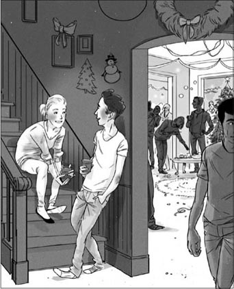
Sam and Lucy met three Christmases ago at a party.
'Is it love?' asked Becky after the first year.
'Of course it is,' said Lucy.
'Well, does he say, "Lucy, I can't live without you! Lucy, marry me! Be my valentine, always." Does he say all those things?' laughed Becky.
Lucy laughed too. 'No, that's not Sam. Sam doesn't say things – he does things.'
But today, Lucy thought, 'Three years is a long time to love somebody. Perhaps this year... Perhaps this Valentine's Day... Perhaps.'
Monday, 11th February, afternoon
Becky phoned Lucy on the 11th. 'I saw Sam this morning,' she said. 'He's so nice, Lucy – you're a lucky girl.'
Lucy was surprised. 'Where did you see him, Becky?'
'At the Sunflower Café, of course. I went there for a coffee.'
'Again?' Lucy thought. 'She went there three times last week, twice the week before... The Sunflower isn't near her office. Why does she always go there for coffee?'
'Oh,' she said. 'Well, Sam's very busy just now. I'm not going to see him for a day or two.'
Becky laughed. 'We've got a surprise for you, you know,' she said. 'I'm so excited. Can you wait for a few days?'
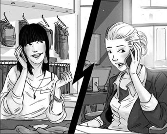
'We've got a surprise for you,' Becky laughed.
'We've got a surprise? What do you mean?' asked Lucy.
'I can't say anything now,' Becky answered. 'See you on the 13th. Bye.'
Suddenly Lucy wasn't so excited about Valentine's Day. She began to feel worried about her Sam – and beautiful Becky. What surprise? She didn't want any surprises. And a surprise from Sam and Becky? Becky often went to have coffee at Sam's café these days. Why? And Sam liked Becky, he often said that. He laughed a lot when he was with Becky. Perhaps he was in love with Becky. He didn't phone last night, he didn't phone the night before...
Wednesday, 13th February, afternoon
Late on the 13th, the Sunflower Café was busy. There were beautiful cakes everywhere, and people went out of the shop with happy smiles on their faces and big red boxes in their hands.
Sam went outside and looked at the window. He had a plan for Valentine's Day, and he was nearly ready.
'Hello, Sam.' It was Becky.
'Hi, Becky. Are you meeting Lucy?'
'Yes, we're going salsa dancing tonight. So – what's going in the window, Sam?'
'Ah, I've got a new idea. It's your idea, but better! Come into the shop.'
A moment later Lucy arrived at the door of the shop. She wanted to see Sam before she went dancing with Becky. She looked in, and saw Becky – Becky and Sam, heads together, talking and laughing. Lucy stopped at the door. 'So it's true,' she thought. 'There they are, together.' She could not hear their words, but they looked happy, so happy. Then Becky Suddenly kissed Sam on the cheek, and Sam kissed Becky back.
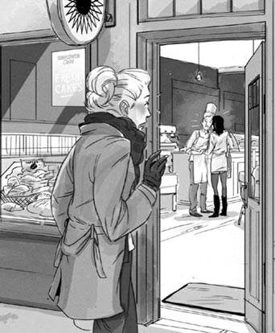
Lucy looked in, and saw Becky and Sam, heads together.
Lucy went quietly away, her eyes full of tears. 'My heart is breaking,' she thought. 'I love him so much – but lots of men like beautiful Becky, and now he does too.'
She took out her phone and sent a text to Becky.
Sorry. Not feeling well.
Going home to bed.
From: Lucy
17:40 13-FEB
Sam put his cakes in the window, and smiled. Becky went dancing, and laughed. Lucy went to bed – and cried.
Thursday, 14th February, morning
Lucy woke up the next morning. 'It's Valentine's Day,' she thought happily – but then she remembered Sam and Becky, and the happy smile left her face. Did it really happen?
But it was Valentine's Day. She waited until nearly nine o'clock. Perhaps a letter, some flowers, a cake from Sam? But nothing came.
Becky phoned. 'Are you OK, Lucy? How are you feeling today? Do you want to meet me at lunchtime at the Sunflower?'
'I – I don't know,' Lucy said. But she did know. She didn't want to see Sam and Becky together. She needed some time. 'It's going to be busy at work today,' she said. 'Perhaps later, OK?'
Then a text message arrived from Sam.
Can you meet me at the café?
From: Sam
08:55 14-FEB
Lucy sent her answer.
Perhaps later.
From: Lucy
08:59 14-FEB
But I'm not going to see Sam, she said to herself, and I'm not going to see Becky – and I'm not going to the shop. Valentines, love, hearts, kisses – no, thank you. And she turned off her phone and went to work.
Thursday, 14th February, afternoon
Later that afternoon Lucy turned on her phone again. There were two texts, one from Becky...
Come to the café. Exciting news!
From: B
16:32 14-FEB
and another from Sam...
Come to the café. Exciting news!
From: Sam
16:35 14-FEB
But Becky sent her text at 16:32, and Sam sent his text just three minutes later. 'So they were together,' Lucy said to herself. 'Exciting news! Well, not for me.'
She did not want to think about it. On the bus home she looked out of the window, but everywhere she saw hearts and red roses.
'Forget Valentine's Day!' Lucy said to herself when she got home. 'I'm going to watch a film.' But when she opened her door, there was a piece of paper on the floor. The message on the paper said, 'Watch the local news on TV at 18:00.' There was no name.
'Who wrote this?' Lucy said. 'Watch the news? Why?'
She turned on the TV and went to make a cup of coffee. Suddenly she heard the name 'Sam Morris' and she ran back to the TV.
'It's Valentine's Day,' said the TV reporter, 'and Sam put a message in the Sunflower Café for his girlfriend Lucy. Sam made all the cakes, and he put them in the window last night. You can see them here.'
Lucy looked. There in the window of the Sunflower Café was a big red heart cake. Around it were lots of little cakes, and they made a message – a special message for Lucy.
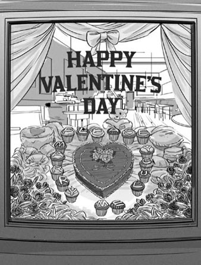
A message for Lucy...
'There's the message, but where's Lucy?' the reporter said. 'She often comes to the Sunflower Café, but she didn't come today. And she isn't answering her phone. Is Sam going to have a happy Valentine's Day? What's your answer, Lucy?'
But Lucy didn't tell him. She didn't even stop to turn off the TV. She got her coat and ran out of the door. She had a very important message for Sam. She didn't want to phone him, she didn't want to send a text. She wanted to give him the message, face to face.
Friday, 15th February, evening
The next evening, Becky arrived at Lucy's house. Sam opened the door.
'Congratulations, Sam!' said Becky. 'And Lucy too.'
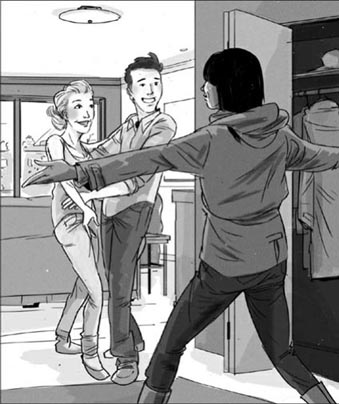
'Congratulations, Sam! And Lucy, too,' said Becky.
'Oh, thank you, Becky. Come on in,' Lucy said.
'I've got some champagne for you,' Becky said. 'Here.'
Sam took the bottle. 'Wonderful!' he said. 'Let's drink it now.' He went away to open the bottle. Becky turned to Lucy.
'You look so happy!' she said. 'But what happened yesterday? I was really worried, you know. You didn't tell me anything on the phone this morning.'
Lucy laughed, but her face was red. 'I know. I'm sorry,' she said.
'But why didn't you answer my phone messages or my texts?' said Becky. 'Come on! Tell me everything!'
'Well,' Lucy said, 'I went to the café on the 13th, and I was at the door and... and I saw you inside with Sam. You looked so happy together. Then you kissed Sam, and he kissed you. And on Monday, you remember, you talked about a "surprise". Well, I thought that was the surprise – you and Sam.'
'Oh Lucy!' said Becky. 'That wasn't the surprise! Sam and I talked about Valentine's Day. He wanted to make a special Valentine's Day for you. So I said to him, "What do you do best, Sam? You make wonderful cakes. So make her a cake!" And he thought about it, and he had a better idea – he made lots of cakes. I kissed him because I was so excited for you.'
'Well,' said Lucy, 'when I saw you two, I got the wrong idea. And I went home. I didn't want to talk to anyone. And I really didn't want to talk to you – or Sam!'
Becky laughed. 'Oh Lucy,' she said. 'You thought – me and Sam... Well, it doesn't matter now. And I wanted to tell you – on Wednesday night at Marco's Club I met this man. He's called Matt, and he's really nice. But go on with your story.'
'On Valentine's Day I didn't answer my phone, and Sam couldn't leave the café,' Lucy said. 'So his friend Nick put a message under my door. It said, "Watch the local news on TV at 18:00." And at last I saw the cakes, and the message – and I ran to the Sunflower Café.'
'And now it's all OK,' said Becky. 'Can I see your ring? Oh, that's beautiful.'
Sam brought three glasses of champagne.
'To Lucy and Sam!' said Becky, and they all drank.
Sam looked at his watch, and turned on the TV. 'Hey, Becky, watch this,' he said. 'This is the end of the story.' After a few minutes the local news began, and they saw the same reporter from the day before. He was outside the window of the Sunflower Café.
'Everyone wanted to know the answer to Sam's question to Lucy yesterday,' the reporter said. 'Well, Sam got his answer. Lucy came to the Sunflower Café last night after she saw the news on TV. And this was her answer – here in the window!'
The television camera went closer to the window. In the window there were just four cakes now. There was the big red heart cake, and three little cakes above it.
'Lucy wanted to do that. She took my little cakes and wrote her answer with them,' said Sam. He gave Lucy a little kiss.
Becky laughed. 'Oh, you two!' she said. 'You're – wonderful!'
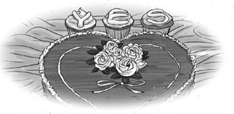
mobile phone a phone that you can carry around with you 手机
text message a short written message sent on a mobile phone 手机短信
salsa dancing a kind of fast, exciting Latin American dancing 萨尔萨舞
Valentine's Day February 14th, when traditionally people send a special card to someone they love, often without saying who the card is from. They may also send flowers, especially red roses, or other presents as a sign of love 情人节
café n. a place where you can buy drinks and simple meals 咖啡店；小餐馆
valentine n. someone you love or think is attractive, that you send a card to on Valentine's Day 在情人节选定送卡致意的情人
marry v. if you marry someone, you become their husband or wife 结婚
twice adv. two times 两次
surprise n. an unexpected or unusual event 意想不到的事，惊喜
kiss v. to touch someone with your lips to show love 亲吻
cheek n. the soft part of your face below your eye 脸颊
tear n. water that comes out of your eyes when you cry 眼泪
lunchtime n. the time in the middle of the day when people usually eat their lunch 午餐时间
local adj. belonging to the place where you live 当地的
reporter n. someone whose job is to write about news events for a newspaper, or to tell people about them on television or on the radio 记者
special adj. not ordinary or usual, but different in some way and often better or more important 特殊的，特别的
face to face to meet someone and talk to them, instead of just hearing about them, talking to them on the phone etc 面对面
congratulations you say this to somebody when you are pleased about something they have done 祝贺你
champagne n. a French white wine with a lot of bubbles （法国产的）香槟酒
ring n. a piece of jewellery that you wear on your finger 戒指
camera n. a piece of equipment used to take photographs or make films or television programmes 摄像机
蛋糕师
蛋糕师
2月8日，星期五，下午
露西的桌子下面有东西在响，是她的手机收到了一条新短信。
我这周末出门。
13号星期三，跳萨尔萨舞
在马尔科俱乐部。你来不？
发自：B
14:30 02-08
露西笑了。这是B——她的好朋友贝姬——发来的短信。贝姬总忙着各种新的事物——新衣服、新俱乐部、新男友……她是个漂亮的女孩子，男人们当然喜欢她。
露西回了一条短信。
13号没问题。
发自：露西
14:35 02-08
露西的男友萨姆2月13号总是没有空闲，因为2月14号是情人节。萨姆是蛋糕师，他开了一家蛋糕咖啡店，名叫向日葵咖啡店。城里每个人都喜欢萨姆做的漂亮的情人节蛋糕。每年的2月14号，向日葵咖啡店的橱窗里都会摆满蛋糕。蛋糕上写着，“做我的恋人吧！”或者“永远爱我。”
露西向窗外望去。永远爱我！啊，是的，她爱萨姆。他们是在三年前的一个圣诞节派对上认识的。萨姆个子高高的，不怎么说话，不过他有很多好点子。没过多久，他和露西就形影不离了。
“这是爱吗？”一年之后贝姬问。
“当然是了。”露西说。
“哦，那他有没有说‘露西，我没有你就活不下去了！露西，嫁给我吧！做我的恋人，永远的恋人。’他说没说过这些话？”贝姬笑问。
露西也笑了。“不，那不是萨姆。萨姆从来不说——他总是去做。”
可是今天，露西想，“爱一个人三年，这时间也不短了。也许今年……也许这个情人节……也许吧。”
2月11日，星期一，下午
11号那天，贝姬给露西打电话。“我今天早上看见萨姆了。”她说，“他人真好，露西——你是个幸运的女孩。”
露西感到惊讶。“你在哪里见到他的，贝姬？”
“当然是在向日葵咖啡店了。我去那儿喝了杯咖啡。”
“又去了？”露西心想，“上个星期她去了三次，再上个星期去了两次……向日葵咖啡店离她的办公室并不近。她为什么总去那里喝咖啡？”
“噢。”她说，“嗯，萨姆这阵子很忙。我这一两天都不会见他。”
贝姬笑了起来。“你知道吗，我们要给你一个惊喜。”她说，“我太兴奋了。你能再等上几天吗？”
“我们准备了一个惊喜？你是什么意思？”露西问。
“我现在什么都不能说。”贝姬答，“13号见。拜拜。”
突然间，露西觉得情人节没那么令人激动了。她开始担心她的萨姆——还有漂亮的贝姬。什么惊喜？她不想要任何惊喜，而且还是萨姆和贝姬的惊喜？贝姬这些天经常去萨姆的咖啡店喝咖啡。为什么呢？况且萨姆也喜欢贝姬，他常常这么说。他和贝姬在一起时总是有说有笑。也许他爱上贝姬了。他昨天晚上没打电话，前天晚上也没打电话……
2月13日，星期三，下午
13号的傍晚，向日葵咖啡店里顾客盈门。店里到处都是漂亮的蛋糕。人们走出来的时候，脸上都带着幸福的笑容，手里则拿着红色的大盒子。
萨姆走出店外，看了看橱窗。他为情人节制订了一个计划，他就要准备好了。
“你好啊，萨姆。”贝姬来了。
“嗨，贝姬。你要和露西见面吗？”
“是啊，我们今晚一起去跳萨尔萨舞。那么——橱窗里要放什么，萨姆？”
“啊，我有个新主意。其实是你的主意，但是我改进了一下！到店里来吧。”
不一会儿，露西到了咖啡店门口。她想先见见萨姆，再和贝姬去跳舞。她往店里看，看见了贝姬——贝姬和萨姆，脑袋凑在一起，有说有笑。露西在门口停住了。“看来是真的了。”她想，“他们就在那儿呢，在一起。”她听不到他俩在说什么，不过他们看上去很开心，那么开心。随后，贝姬突然亲了萨姆的脸颊，萨姆也回亲了贝姬。
露西默默地离开了，眼里满是泪水。“我的心碎了。”她想，“我那么爱他——可是很多男人都喜欢漂亮的贝姬，现在连他也不例外。”
她掏出手机，给贝姬发了一条短信。
对不起。不太舒服。
回家睡觉了。
发自：露西
17:40 02-13
萨姆把他的蛋糕放进橱窗里，笑了起来。贝姬去跳舞了，乐呵呵的。露西躺在床上——哭了。
2月14日，星期四，早上
第二天露西一觉醒来。“今天是情人节。”她高兴地想——但她随即想起了萨姆和贝姬，快乐的笑容就从她的脸上消失了。那真的发生了吗？
不过今天确实是情人节。露西一直等到将近九点钟。也许萨姆会给她送一封信、几枝花或是一个蛋糕？可是什么也没有。
贝姬打电话过来了。“你还好吧，露西？今天感觉怎么样？想不想午餐的时候在向日葵咖啡店见个面？”
“我——我没想好。”露西说。但是她已经想好了。她不想看到萨姆和贝姬在一起的样子。她需要一些时间。“今天工作会忙。”她说，“也许晚些时候，好吗？”
之后她收到了萨姆的一条短信。
你能到咖啡店和我见个面吗？
发自：萨姆
08:55 02-14
露西回复：
也许晚些时候吧。
发自：露西
08:59 02-14
不过我不会去见萨姆的，她自言自语，我也不会去见贝姬——我不会去店里的。情人，爱情，桃心，吻——我都不要了。她关了手机去上班。
2月14日，星期四，下午
那天下午晚些时候，露西又打开了手机。有两条短信，一条来自贝姬……
快来咖啡店。激动人心的消息！
发自：B
16:32 02-14
另一条来自萨姆……
快来咖啡店。激动人心的消息！
发自：萨姆
16:35 02-14
可是，贝姬16点32分发的短信，萨姆是三分钟之后发的。“这么说他们是在一起的。”露西自言自语，“激动人心的消息！哼，我可不觉得。”
她不愿去想这件事。坐公交车回家的路上，她往窗外望去，可满眼都是桃心和红玫瑰。
“忘了情人节吧！”露西到家时对自己说，“我要看电影。”但当她打开家门的时候，发现地板上有一张纸。纸上写着：“看电视18:00的本地新闻。”没有落款。
“这是谁写的？”露西说，“看新闻？为什么？”
她打开了电视，然后去弄一杯咖啡。突然她听见了“萨姆·莫里斯”这个名字，于是赶紧跑回电视前。
“今天是情人节。”电视记者说，“萨姆在向日葵咖啡店展示了一条给他女友的信息。他做了这些蛋糕，昨晚把它们摆在了橱窗里。观众们可以从这里看到蛋糕。”
露西看着。在向日葵咖啡店的橱窗里有一个大大的红色心形蛋糕。周围放了很多小蛋糕，小蛋糕组成了一条信息——一条给露西的特别的信息。
“信息在那儿，可露西在哪儿？”记者说，“她经常来向日葵咖啡店，可今天却没来，还一直不接电话。萨姆会有一个快乐的情人节吗？你的答复是什么，露西？”
不过露西没有告诉他。她甚至都没把电视关上。她拿上大衣就跑出门。她有很重要的话要对萨姆说。她不想给他打电话，也不想发短信。她想把这些话告诉他，面对面地告诉他。
2月15日，星期五，傍晚
第二天傍晚，贝姬来到露西的家。萨姆开了门。
“恭喜你，萨姆！”贝姬说，“还有露西，也恭喜你啊。”
“噢，谢谢你，贝姬。进来吧。”露西说。
“我给你们带来了香槟。”贝姬说，“这儿。”
萨姆接过瓶子。“棒极了！”他说，“我们现在就喝吧。”他到一旁去开酒瓶。贝姬转过身来看着露西。
“你看上去真幸福！”她说，“不过昨天是怎么回事？你知道吗，我真的很担心。你今早在电话里可什么也没告诉我。”
露西笑了起来，但她的脸红了。“我知道。我很抱歉。”她说。
“那你为什么不回我的电话留言，也不回我的短信？”贝姬说，“来！把一切都告诉我！”
“嗯。”露西说，“我13号那天去了咖啡店，当时我站在门口，然后……然后我看到你和萨姆在店里。你们在一起看起来很快乐。然后你亲了萨姆一下，他也亲了你。而且星期一的时候，你还记得吧，你说会有一个‘惊喜’。呃，我以为惊喜是——你和萨姆。”
“啊，露西！”贝姬说，“那可不是我说的惊喜！萨姆和我在讨论情人节的事。他想为你准备一个特别的情人节。所以我就和他说：‘你最擅长什么，萨姆？你做的蛋糕特别棒。那就给她做个蛋糕吧！’他就一直在想这件事，后来他有了一个更好的主意——他做了好多好多的蛋糕。我亲他是因为我太为你感到激动了。”
“噢，”露西说，“我看到你们在一起，我误会了。然后我就回了家。我不想和任何人说话。我特别不想和你——还有萨姆说话！”
贝姬笑了。“噢，露西。”她说，“你以为——我和萨姆……算了，现在这些都无所谓了。我还想告诉你——周三晚上在马尔科俱乐部，我认识了一个人。他叫马特，他人非常好。不过，你继续说你的故事吧。”
“情人节那天，我没有接电话，萨姆又不能离开咖啡店。”露西说，“所以他的朋友尼克就在我的门下留了言。上面写着：‘看电视18:00的本地新闻。’我这才看到那些蛋糕和萨姆的信息——于是我就跑到向日葵咖啡店。”
“现在一切都好了。”贝姬说，“我能看看你的戒指吗？啊，真美。”
萨姆端来了三杯香槟。
“为露西和萨姆干杯！”贝姬说，他们三个人一起喝了香槟。
萨姆看了看手表，打开了电视。“嘿，贝姬，看这个。”他说，“这是故事的结局。”过了几分钟，本地新闻开始了，他们看到了昨天的那位记者。他正在向日葵咖啡店的橱窗外。
“每个人都想知道，萨姆昨天向露西提出的问题得到了怎样的答复。”那个记者说，“好了，萨姆得到了答复。昨天晚上，露西在电视上看到新闻之后，就来到了向日葵咖啡店。这就是她的答复——往橱窗里看！”
电视的摄像机对着橱窗逐渐拉近。橱窗里现在只有四个蛋糕——那个大大的红色心形蛋糕，还有上方三个小蛋糕。
“是露西要这么做的。她用我的小蛋糕写下了答复。”萨姆说。他轻轻地吻了露西一下。
贝姬笑了。“啊，瞧你们俩！”她说，“你们——真是太棒了！”
The Bridge
The Bridge
Alma closed the door of her parents' home, and she and her friend Barbara stood in the sun for a moment. 'Your mother is so nice, Alma,' said Barbara. 'She said to me, "We love to see Alma's friends." She wants me to stay for a week!'
Alma smiled. 'She likes you, Barbara. You're a good friend to me, and my mother knows that,' she said. She looked around her at the street. 'After six years away, this city feels very different to me.'
Barbara smiled. 'Yes,' she said, 'after your six years in Vienna, you're more Austrian than I am. But Everything feels different now, it's true. Six long years of study – and now we're doctors!'
'And next month Everything changes for you again,' Alma said. 'A new life in Salzburg. I'm really happy for you.'
'A new life, a new city, a new hospital,' said Barbara. 'It's a famous hospital, too. I'm lucky to get work there.' She turned to her friend. 'But what about you, Alma? What are you going to do? Are you going back to live in Vienna again? Or are you going to look for work here?'
'I don't know,' said Alma slowly. 'Before I can answer that question, I need to tell you a story. The story of Nina.' They started walking to the river, and Alma began her story.
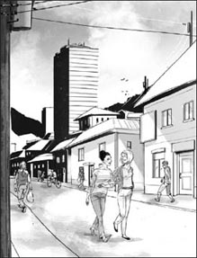
'I need to tell you a story,' said Alma. 'The story of Nina...'
Nina was my little sister. She was beautiful – much more beautiful than me, with her black hair and green eyes. And she was full of life, and clever too.
There were always boyfriends at the door, but they changed all the time. Then when she was eighteen, she began to study at the university. One day she came home with a smile on her face.
'What is it, Nina?' I asked. 'You look excited about something. Or is it somebody? Tell me!'
'I met someone today,' she said happily. 'He's called Dragan and he's studying maths too. And he's... he's wonderful.'
'That's great, Nina,' I said. 'Where in the city does he live?'
My sister did not answer this question. She began to talk about a party on Friday night. I looked at her face carefully. I knew my little sister very well.
'Nina,' I said. 'Come on, tell me. Where does Dragan live?'
Again, Nina said nothing, but I knew the answer. It was bad news – bad news for Nina, bad news for our parents, bad news for everyone.
Two weeks later, Nina brought Dragan to our house. Dragan was tall and dark, with bright eyes and a quick smile. He loved Nina, and she loved him – we could all see that. Dragan had dinner with us, and then we had coffee and talked. Then my father spoke.
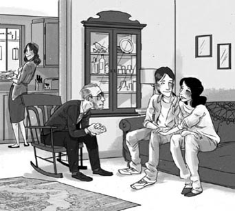
Dragan loved Nina, and she loved him – we could all see that.
'Dragan,' he said, 'your people are not our people.'
I looked at Nina. She was quiet, and watched my father carefully, but she said nothing. Dragan looked worried.
'We live on this side of the river, and your people live on the other side,' my father said. 'We have our places of worship, and you have yours. We are different. We have our ways, and your people have their ways. It was like that when I was a boy, and it is still like that now.'
Then he smiled.
'But we can be friends,' he said. 'You are a good man, and my daughter loves you. Anybody can see that. Our door is always open to you, Dragan.'
'Thank you,' said Dragan quietly. And Nina smiled – at him, at my father, at me, at everybody.
After that, they were always together. At the university, at home, in town – it was always Nina and Dragan. They studied together and went to parties together. They were two young people, happy and in love.
And then the war began. At first things were difficult, but they could still meet sometimes. But then things began to change. When the university closed, Nina and Dragan could not see each other every day. They talked on the phone, but it was not the same.
'I can't live without him,' Nina said to us one night, with tears on her face. 'I must see him! I must.'
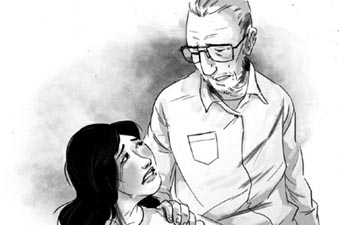
'I can't live without him,' Nina said.
'Nina, you can't cross the bridge,' my father said. 'It's dangerous for you over there. There are men with guns everywhere, and they watch the bridge night and day. And Dragan can't come here – not now. We must all wait. Perhaps one day you can see him again.'
'Wait?' said Nina, and the tears came to her eyes again. 'For how long?'
A week later, Nina left our house very early one morning. Nobody heard her. Dragan left his house, too, and they both walked carefully and quietly to the bridge. They just wanted to see each other. Nina left a message for us in her room.
'I'm not going onto the bridge,' the message said, 'but I must see him. I can't wait any longer.'
We waited all day. Where was she? My mother phoned all our friends, but nobody had any news. Then that evening an old friend of the family came to the door.
'I have some terrible news,' he said. 'I'm so sorry, so sorry.'
At once my mother began to cry. My father put his arm around her. 'Tell us,' he said. 'It's about my daughter, yes? My little Nina...'
'It happened this morning,' our friend said. 'On the bridge. Your daughter saw her boyfriend Dragan on the other side. She called his name, and he ran onto the bridge – and somebody shot him. When he fell, she ran onto the bridge at once. She took him in her arms, but somebody shot her too. They died on the bridge together. We are trying to bring their bodies back, but it's very difficult. I am very sorry.'
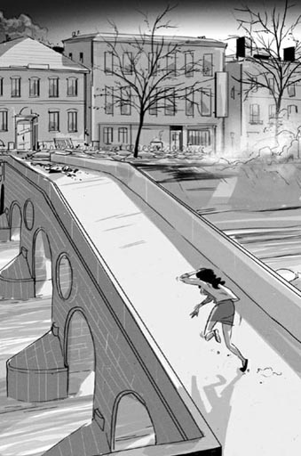
'Your daughter ran onto the bridge at once.'
I went to Nina's room. Next to her bed, there was a photo of her and Dragan. She told me once, 'I can't live without him.' And it was true. But now they are together – for ever.
So we waited. Those were terrible days. Nobody said very much, and my mother cried a lot. In my room at night, I cried too. And then, on a beautiful spring day, we went to a hill above the town. It was sunny all day. Nina loved the sun, I remembered. And there we buried them together – my sister Nina, and her Dragan.
For a few minutes, the two women did not speak. They walked slowly along by the river. The water was bright in the sunlight.
Then Barbara said, 'And when did you leave and go to Austria?'
'A week later,' Alma said. 'My parents sent me to my mother's sister Ana in Vienna. I did not want to leave them, but it was dangerous here – more dangerous every day. They did not want to lose two daughters. Ana was good to me – she understood. She helped me to begin my studies again.'
'And now you are back in your home town,' said Barbara. 'Why now?'
'When the war ended,' Alma said, 'I wanted to come back. But I wasn't ready. "Finish your studies first," my parents said, and they were right. But now it's the right time. I needed to see my family, and I needed to go to the bridge.'
Alma stopped, and turned to her friend. Her face was white. 'And there it is,' she said, very quietly. 'Just along the river. Look. You can see it now.'
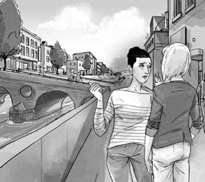
'And there it is,' Alma said. 'Just along the river.'
Barbara took her friend's arm. 'Let's go over there to that café,' she said. 'You need to sit down.'
'The Bridge Café,' said Alma. 'I remember it – Nina often waited for Dragan there. Yes, let's go there – I feel close to Nina there.'
They crossed the road and sat down at a table outside the café. They both had coffee, and Alma began to look better.
'Are you OK?' asked Barbara.
'Yes, thanks,' said Alma. 'I just need some time – and some more coffee perhaps.'
Barbara felt the warm sun on her face. 'This is a difficult day for Alma,' she thought. 'But the sun's shining, and people are doing the usual things – working, driving around, shopping, talking, having coffee... Perhaps that can help her.'
Alma and Barbara had another coffee, and watched the river. Just then a big black car stopped near the bridge. A beautiful young woman in a long white dress got out of the car with a young man. She carried a bouquet of white flowers in one hand, and the young man held her other hand. They walked onto the bridge, and when they got to the middle, they stopped. The young woman took two flowers from her bouquet. She dropped one flower into the river, and her husband dropped the second flower.
Alma and Barbara watched all this. 'What are they doing?' Alma whispered. 'Find out for me, Barbara. Ask somebody.'
Barbara turned to a man at the next table. 'Excuse me,' she said. 'I'm a visitor here. Can you answer a question for me?'
'Yes, of course,' the man said. 'What do you want to know?'
'Those two young people on the bridge,' said Barbara. 'What are they doing? Why are they dropping flowers into the water?'
'It's their wedding day,' said the man. 'In the war, two young lovers died on the bridge. They were called Nina and Dragan. We don't want to forget them. Now, after a wedding, people come here and drop two flowers into the river – one for Nina, one for Dragan. Watch them now – they are saying their names.'
Barbara was afraid to look at Alma's face. Alma sat so still, so still.
On the bridge, the man and woman watched the flowers in the water for a moment. The man put his arm around his young wife. Then they walked slowly back to the car and drove away.
'Who did it first? I don't know,' said the man at the next table. 'But now everybody comes here on their wedding day. We all remember the war, of course we do, but we must remember love too. Love is more important than war.'
'Thank you,' said Barbara. 'Thank you very much for telling us that story.'
She looked at Alma's white face. 'Come,' she said quietly. 'Let's walk onto the bridge together.'
She took Alma's arm and they walked onto the bridge. At the middle of the bridge Barbara stopped, and looked out over the river.
'Look,' she said to Alma. 'The flowers are still there. Do you see? Flowers for Nina and Dragan. That's so beautiful.'
The two white flowers were bright in the sun.
'Love is more important than war,' Alma whispered. There were tears on her face, and she watched the flowers for a long time. Then she looked at Barbara, and slowly smiled.
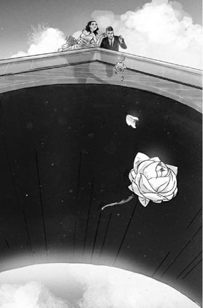
'Love is more important than war.'
'Barbara, I know the answer to my question,' she said. 'I can live here again. This is my home.'
They walked off the bridge. The two flowers, together in the water, moved slowly away on the river.
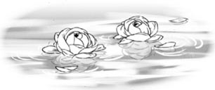
worship n. the activity of praying or singing in a religious building in order to show respect and love for a god 做礼拜
war n. when there is fighting between two or more countries or between opposing groups within a country, involving large numbers of soldiers and weapons 战争
gun n. a metal weapon which shoots bullets or shells 枪
terrible adj. something terrible makes you very afraid or unhappy 可怕的，糟糕的
shoot v. to deliberately kill or injure someone using a gun 射击
body n. the dead body of a person 尸体
white adj. looking pale, because of illness, strong emotion etc （脸色）苍白的
bouquet n. an attractive group of flowers, especially given as a present 花束
whisper v. to speak or say something very quietly, using your breath rather than your voice 低语
wedding n. a marriage ceremony 结婚庆典
桥
桥
阿尔玛关上父母家的门，她和朋友芭芭拉在阳光下站了一会儿。
“你妈妈人真好，阿尔玛。”芭芭拉说，“她对我说：‘我们很高兴见到阿尔玛的朋友。’她希望我在这儿住一个星期！”
阿尔玛笑了。“她喜欢你，芭芭拉。你是我的好朋友，我妈妈知道的。”她说。她环顾街道四周。“出去六年了，这座城市让我感觉大不一样了。”
芭芭拉笑了。“是啊。”她说，“你在维也纳住了六年，比我更像一个奥地利人了。不过现在感觉一切都变了，这是真的。六年的学习生涯——现在我们都是医生了！”
“下个月，你的一切又要改变了。”阿尔玛说，“萨尔茨堡的新生活。我真为你高兴。”
“新的生活，新的城市，新的医院。”芭芭拉说，“那也是家著名的医院。我能得到那里的工作机会真是幸运。”她转向她的朋友。“那你呢，阿尔玛？你想做什么？你打算回维也纳住吗？还是准备在这里找工作？”
“我不知道。”阿尔玛慢悠悠地说，“回答这个问题之前，我要给你讲个故事。尼娜的故事。”她们往河边走去，阿尔玛开始讲了起来。
尼娜是我的妹妹。她很漂亮——比我漂亮多了，黑头发，绿眼睛。她充满活力，而且人很聪明。
她总有男朋友在门口等候，只不过一直在换人。她十八岁时上大学。有一天她回到家，脸上挂着笑容。
“怎么了，尼娜？”我问，“你一脸兴奋，是因为什么事，还是因为什么人？告诉我！”
“我今天认识了一个人。”她开心地说，“他叫德拉甘，他也是学数学的。而且，他……他棒极了。”
“那很好啊，尼娜。”我说，“他住在城里哪个地方？”
我妹妹没有回答这个问题。她讲起了周五晚上的一个派对。我端详着她的脸。我很了解我的妹妹。
“尼娜，”我说，“来，告诉我，德拉甘住在哪儿？”
尼娜又没有回答，不过我已经知道答案了。这是个坏消息——对尼娜、对我们的父母、对任何人来说都是个坏消息。
两个星期之后，尼娜把德拉甘带到了家里。德拉甘个子高高的，皮肤黝黑，眼睛明亮，脸上随时带着笑容。他爱尼娜，尼娜也爱他——我们都看得出来。德拉甘和我们一起吃了晚餐，然后大家一起边喝咖啡边聊天。这时候我爸爸说话了。
“德拉甘，”他说，“你们和我们不是一种人。”
我看着尼娜。她不作声，小心翼翼地看着爸爸，却一句话也不说。德拉甘看上去有些担忧。
“我们住在河的这边，你们住在河的那边。”我爸爸说，“我们有我们做礼拜的地方，你们也有你们的。你们和我们是不同的。我们有我们的方式，你们有你们的方式。我还是个孩子的时候就是如此，至今也依然如此。”
然后他笑了。
“但我们可以做朋友。”他说，“你是个好人，我的女儿爱你。大家都能看出来。我们家的门永远为你打开，德拉甘。”
“谢谢。”德拉甘轻声说。尼娜笑了——冲着德拉甘，冲着我爸爸，冲着我，冲着每一个人笑了。
从那以后，他们形影不离。在大学，在家，在城里——总能看到两人在一起。他们一起学习，一起参加派对。他们是两个快乐且沐浴在爱河中的年轻人。
随后战争爆发了。开始的时候，情况不好，但他们有时还能见面。可是后来形势就改变了。大学停了课，尼娜和德拉甘不能天天见面了。他们打电话，但是电话与见面是不一样的。
“我的生命里不能没有他。”有天晚上，尼娜流着泪对我们说，“我一定要见到他！一定要。”
“尼娜，你不能过桥。”我爸爸说，“那边对你来说太危险了。那里到处都是拿着枪的人，他们日夜监视着那座桥。而且，德拉甘也不能过来——现在不行。我们都得等。或许有一天你能再见到他。”
“等？”尼娜说，她的眼泪又再次涌出来。“要等多久呢？”
一个星期之后的一个早上，尼娜一大清早离开了家。没有人听到她出门，德拉甘也离开了他家。他们小心谨慎地、悄悄地往桥那边走去。他们只是想见见对方。尼娜在她的房间里给我们留了字条。
“我不会走上桥的，”字条上写道，“但我一定要见到他。我不能再等了。”
我们等了一整天。她去哪儿了？我妈妈给所有的朋友打了电话，但没有人知道她的下落。然后傍晚时，我家的一位老朋友找上门来。
“我有个令人难过的消息。”他说，“我感到非常，非常惋惜。”
我妈妈一下子就哭了出来。我爸爸搂住她。“告诉我们吧。”他说，“是关于我们女儿的，对吧？我的小尼娜……”
“这是今天早上发生的事情。”我们的朋友说，“在桥上发生的。你们女儿看见她的男朋友德拉甘在桥的另一头。她喊他的名字，他就跑上了桥——然后有人向他开枪。他倒下了，尼娜就立刻跑上了桥。她把他抱在怀里，但同样被枪击。他们一起死在桥上。我们正想办法把他们的尸体弄回来，但太困难了。我非常抱歉。”
我走进尼娜的房间。她床边放着她和德拉甘的合影。她曾经对我说：“我的生命里不能没有他。”这是真的。不过现在，他们在一起了——永远在一起。
于是我们等待着。那段日子真是难捱。大家都沉默寡言，我妈妈哭了不知多少次。晚上，我在自己的房间里也会哭。后来，在春光明媚的一天，我们登上一座可以俯视这座城市的小山。那天一整天天气晴朗。尼娜喜欢阳光，我记得。我们就在那儿把他们俩埋葬了——我的妹妹尼娜和她的德拉甘。
过了好几分钟，两个女孩都没有说话。她们沿河边慢慢地走着。河水在阳光下泛着波光。
后来芭芭拉说：“你是什么时候离开这里去奥地利的？”
“一个星期后。”阿尔玛说，“我父母把我送到维也纳的安娜阿姨那里。我不想离开他们，但这里太危险了——一天比一天危险。他们不想失去两个女儿。安娜对我很好——她理解我。她帮助我重新开始了学业。”
“现在你回到自己的家乡了。”芭芭拉说，“为什么现在回来呢？”
“战争结束之后，”阿尔玛说，“我就想回来。不过我还没准备好。‘先完成你的学业。’我父母说。他们是对的。但现在时机正合适。我需要回来看看我的家人，我需要去那座桥上看看。”
阿尔玛停下了脚步，转向她的朋友。她脸色苍白。“那边就是了。”她说，声音细若无声。“沿着河边。看，你现在能看到了。”
芭芭拉扶着她朋友的胳膊。“我们去那边的咖啡店吧。”她说，“你需要坐一会儿。”
“桥头咖啡店。”阿尔玛说，“我记得——尼娜经常在那里等德拉甘。好，我们去那儿——在那儿我会觉得离尼娜很近。”
她们穿过马路，在咖啡店外面的一张桌子旁坐了下来。她们喝了些咖啡，阿尔玛看上去好些了。
“你还好吗？”芭芭拉问。
“还好，谢谢。”阿尔玛说，“我只是需要一些时间——或许再喝点咖啡。”
芭芭拉感到阳光晒在脸上暖暖的。“今天对阿尔玛来说是难熬的一天。”她想，“然而阳光灿烂，人们一切如常——工作，开车转悠，购物，谈天，喝咖啡……也许这些能对她有帮助。”
阿尔玛和芭芭拉又点了咖啡，然后望着河水。这时，一辆黑色的大轿车停在了桥边。一位身穿白色长裙的漂亮年轻女子和一位年轻男子从车里走了下来。她一只手捧着一束白花，另一只手让年轻男子牵着。他们走上桥，走到桥中间的时候停了下来。那年轻女子从花束中抽出两枝花。她把一枝丢进了河里，她丈夫将另一枝丢进了河里。
阿尔玛和芭芭拉看着这一切。“他们在做什么呢？”阿尔玛小声说，“帮我弄清楚，芭芭拉。找个人问问吧。”
芭芭拉转向邻桌的一个男子。“打扰一下，”她说，“我是个游客。可以回答我一个问题吗？”
“当然可以。”那个男子说，“你想知道什么？”
“桥上的两个年轻人。”芭芭拉说，“他们在做什么呢？他们为什么把花儿扔到水里？”
“他们今天举行婚礼。”那个男子说，“战争时期，一对年轻情侣死在了这座桥上。他们名叫尼娜和德拉甘。我们不愿忘记他们。如今，婚礼过后，人们会来这里往河里丢两枝花——一枝给尼娜，一枝给德拉甘。你看那两个年轻人，他们在念尼娜和德拉甘的名字呢。”
芭芭拉不敢看阿尔玛的脸色。阿尔玛僵坐着，一动不动。
在桥上，男女二人望了一会儿水里的花。男子搂住年轻的妻子。随后他们慢慢地回到了车里，开着车走了。
“谁最先这么做的？我不知道。”邻桌的男子说，“不过如今人们在婚礼当天都会到这里来。我们不会忘记战争，那是当然的，但我们也不会忘记爱情。爱情比战争更重要。”
“谢谢你。”芭芭拉说，“非常感谢你告诉我们这个故事。”
她看着阿尔玛苍白的面颊。“来，”她轻轻地说，“我们一起往桥上走走。”
她挽起阿尔玛的胳膊，两个人走上了桥。走到桥中央的时候，芭芭拉停住了脚步，向河面望去。
“看啊，”她对阿尔玛说，“花儿还在那儿呢。你看到了吗？献给尼娜和德拉甘的花。真美。”
两朵白花在阳光下亮闪闪的。
“爱情比战争更重要。”阿尔玛轻声说。她脸上挂着泪水，盯着那两朵花看了很长时间。然后她看着芭芭拉，渐渐地露出了笑容。
“芭芭拉，我的那个问题有答案了。”她说，“我可以重新住在这里。这里是我的家。”
她们走下了桥。水中相伴的那两朵花，在河面上缓缓地漂远了。
Activities: Before Reading
ACTIVITIES
Before Reading
1 Read the story introduction and the back cover. What do you know now about the stories? Tick one box for each sentence.
1) Luke and Gemma make a plan for a holiday.
YES □／NO □
2) Sam has something exciting for Lucy.
YES □／NO □
3) There is a surprise for Becky at the Sunflower Café.
YES □／NO □
4) Luke is good at talking to girls.
YES □／NO □
5) Alma left her home town six years ago.
YES □／NO □
6) Alma forgot about Nina when she left her home town.
YES □／NO □
2 What happens in these stories? Can you guess? Choose one answer for each question.
1) In 'Plan for Love', Luke has a lot of questions for...
a) himself.
b) a beautiful girl at work.
c) Gemma.
d) his family.
2) In 'The Maker of Cakes', Lucy's friend Becky...
a) takes Lucy's boyfriend.
b) gets a job in the Sunflower Café.
c) helps Lucy's boyfriend.
d) buys a cake for Lucy.
3) At the end of 'The Maker of Cakes', Lucy is going to...
a) marry Sam.
b) leave Sam.
c) work with Sam.
d) go on the TV news.
4) In 'The Bridge', Alma learns something new about...
a) her family.
b) her friend Barbara.
c) her sister Nina.
d) the people of her home town.
3 Six of the words in the chart are in all three stories, and there are also two more words from each story. Can you guess which words are in which stories? Put ticks in the chart.
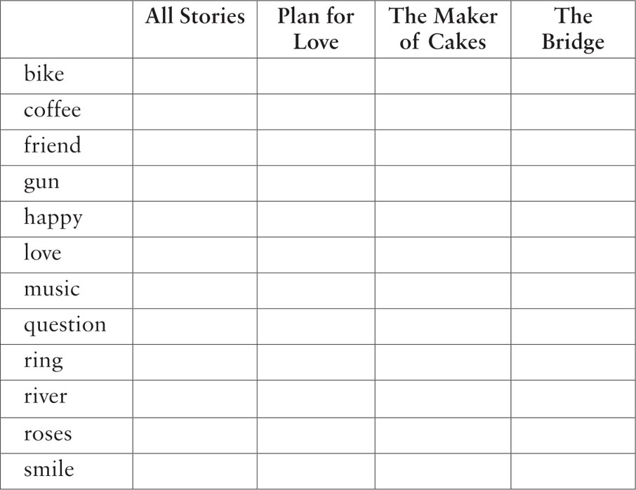
Activities: After Reading
ACTIVITIES
After Reading
1 Match these parts of sentences. First choose the right name for the first part, then choose the right pronoun (he / she / they) for the second part.
Alma, Barbara, Becky, Charlotte, Dragan, Gemma, Lucy, Luke, Nina, Sam
1) _____ loved Nina very much,...
2) _____ wanted to talk to Charlotte,...
3) _____ saw Dragan across the bridge,...
4) _____ saw Sam's cakes on the TV news,...
5) _____ was in love with Luke,...
6) _____ was excited about Sam's idea,...
7) _____ was afraid to go back to her home town...
8) _____ wanted to go to Eastwater...
9) _____ made some cakes for Lucy,...
10) _____ met her friend Alma...
11) so he / she ran to the café.
12) when she / they studied medicine together in Vienna.
13) but he / she was just a friend.
14) because he / she loved shopping.
15) and he / she loved him too.
16) but he / she couldn't find the right words.
17) so he / she kissed him in the café.
18) and he / she put them in the window.
19) because he / she could not forget the sad story of her sister Nina.
20) and he / she called his name.
2 Some months after Barbara's visit, Alma wrote to her in Salzburg. Use these words to complete her letter (one word for each gap).
about, boyfriend, children's, drop, flowers, hospital, into, life, love, news, nice, river, tired, usually, visit
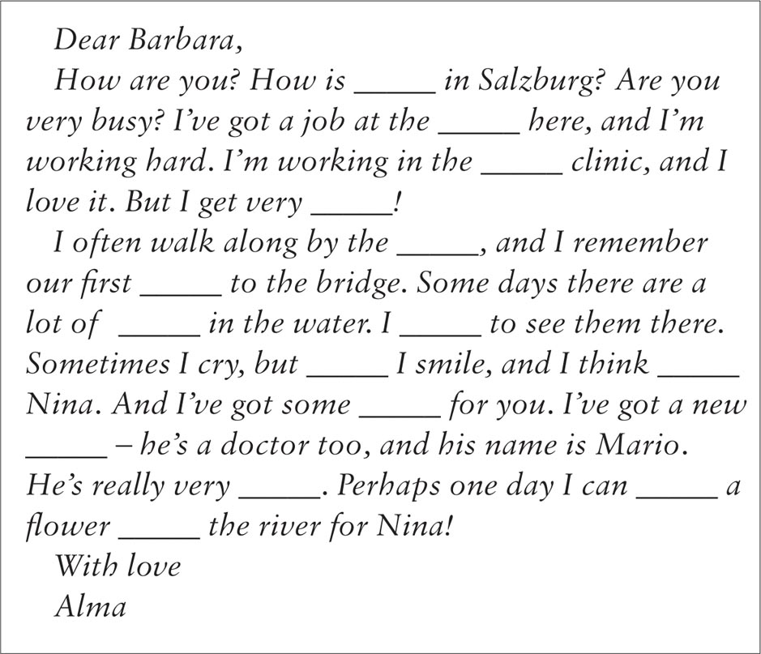
3 Here is a new illustration for one of the stories. Find the best place to put the picture, and answer these questions.
The picture goes in the story ________.
1) Who is the girl, and where is she running to?
2) Why is she going there?
3) What is she going to do when she gets there?
Now write a caption for the illustration.
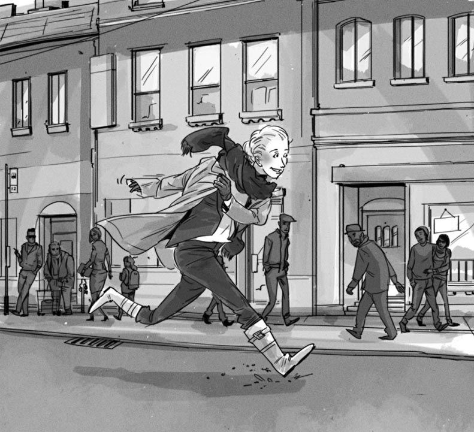
Caption: ________________________________________________
4 Use the clues below to complete this crossword with words from the story.
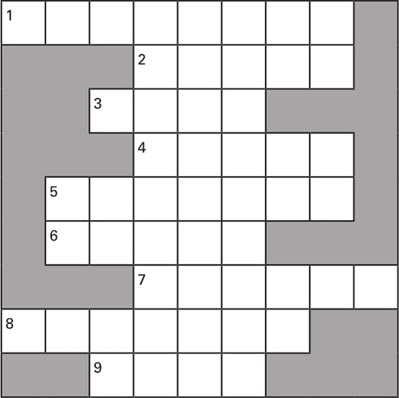
1) A few days when many bands play music, in one place.
2) These fall from your eyes when you cry.
3) This means 'great!' or 'wonderful!'
4) The part of your face at the side below your eye.
5) Your mother and father are your _____.
6) To speak very loudly.
7) You walk on this to get across a river.
8) The day when two people get married.
9) Another word for 'bicycle'.
5 Now look at the completed crossword and find the hidden nine-letter word in it. Complete these sentences.
1) The hidden word is ________.
2) This word comes from the story ________.
6 Sam and Becky talked about Sam's new idea for the cakes. Put their conversation in the right order, and write in the speakers' names. Sam speaks first (number 2).
1) _____ 'And they have a message – come and see.'
2) _____ 'You remember your idea about a cake for Lucy.'
3) _____ 'Well, I had a better idea. I made lots of cakes.'
4) _____ 'Of course! Lucy is going to love this.'
5) _____ 'Lots of cakes! That's a great idea.'
6) _____ 'Oh Sam, tomorrow is going to be so exciting. I can't wait!'
7) _____ 'Do you think so? Do you think she'll like it?'
8) _____ 'Yes – did you do it, Sam? What's it like?'
9) _____ 'Oh, each little cake has a letter... "Please marry me Lucy." That's so cool, Sam!'
10) _____ 'Well, I'm going to put them in the window later this evening – and then tomorrow...'
7 Gemma is thinking about Luke while she makes some questions for him. Use these words to complete the passage (one word for each gap).
answer, bike, can, got, interested, interesting, kind, loves, music, must, never, questions, too, understand
I really don't _____, Luke – why are you _____ in Charlotte? She's not your _____ of girl! Can't you see that? But I _____ think of some _____. OK. Let's start with _____. Do you like the Tree Rats? Huh, I _____ answer that one for Charlotte – and the _____ is No! I know – What kind of music do you like? That's good. Now – swimming. Luke _____ swimming. Me _____. And Charlotte? She _____ goes swimming, I think. Oh – and Charlotte on a _____! That's an _____ idea! So, next question is – Have you _____ a bike?
8 Do you agree or disagree with these ideas? Explain why.
1) It is important for a boyfriend or girlfriend to like doing the same things as you.
2) Love is more important than war.
3) It is better to love and die young than to live a long time without love.
4) When you are in love, it is easy to get the wrong idea about people.
9 How did you feel about the people in these stories? Choose a name for the first gaps, and then complete the sentences in your own words. Use as many words as you like.
Charlotte / Gemma / Luke / Lucy / Becky / Sam / Alma / Barbara / Dragan / Nina
1) I felt sorry for _____ because __________.
2) I did not feel sorry for _____ because __________.
3) I felt pleased for _____ because __________.
4) I felt happy for _____ when __________.
5) I liked _____ because __________.
6) I did not like _____ because __________.
封底
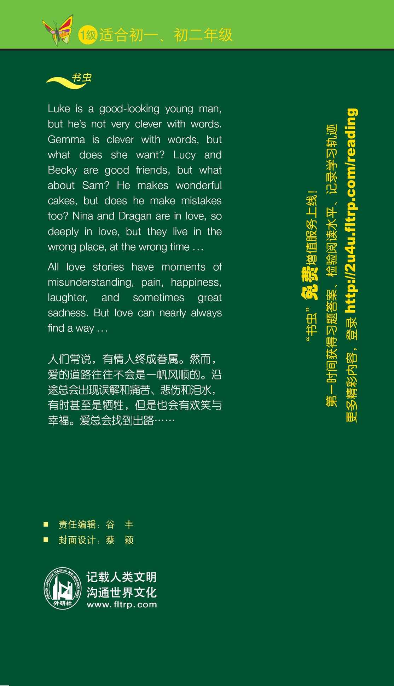